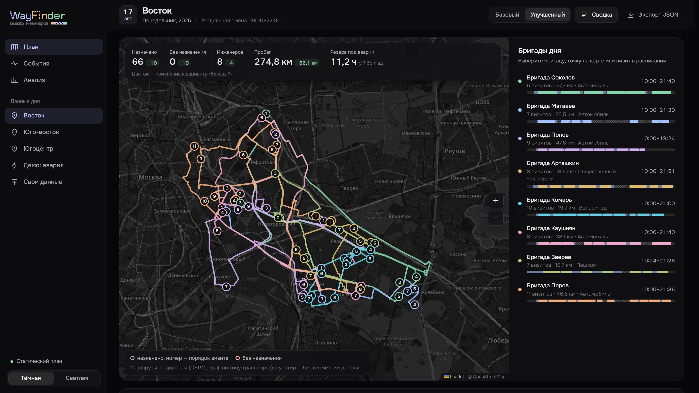
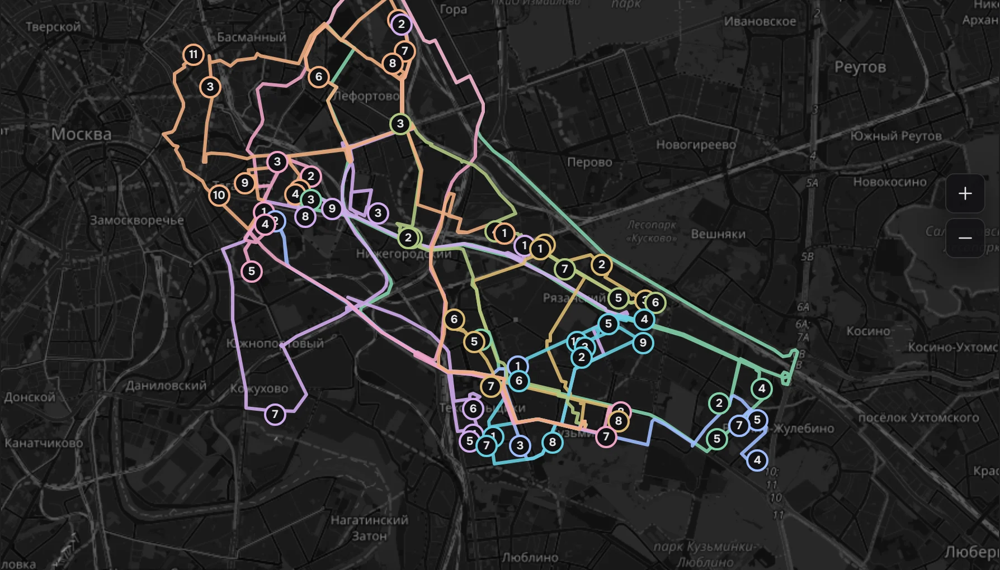
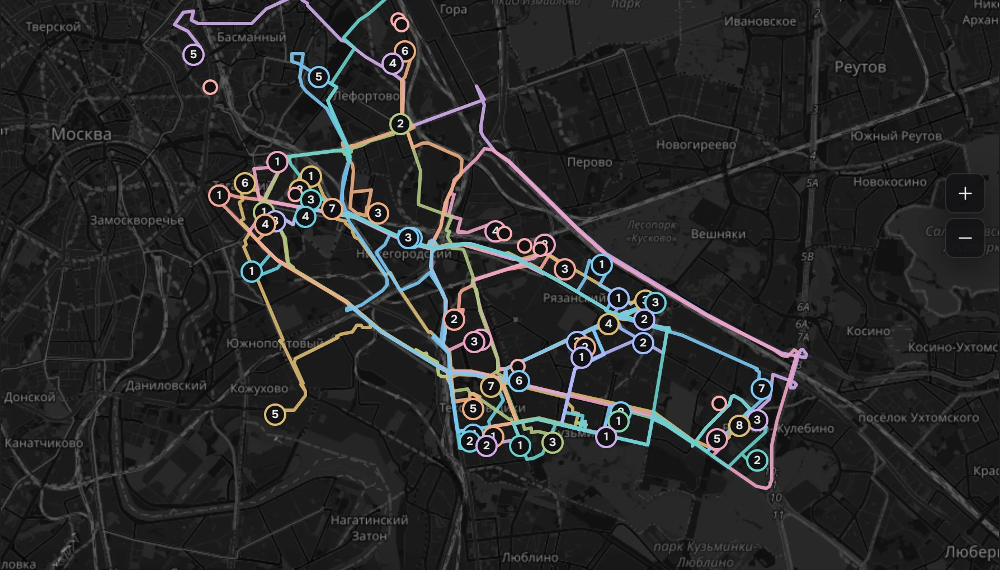
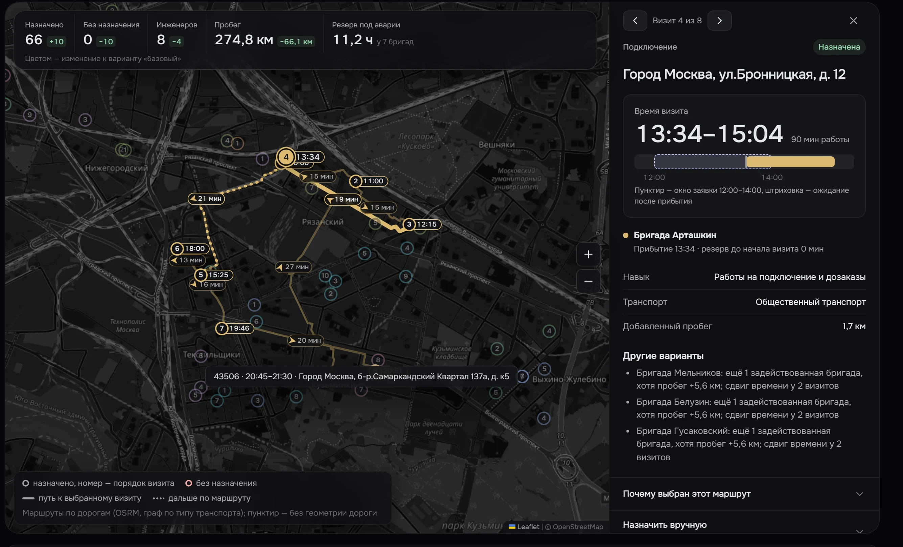
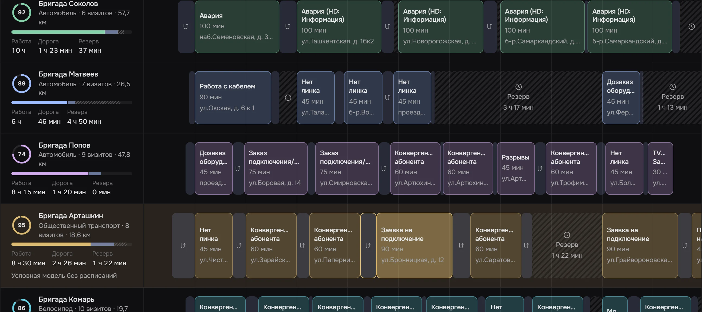
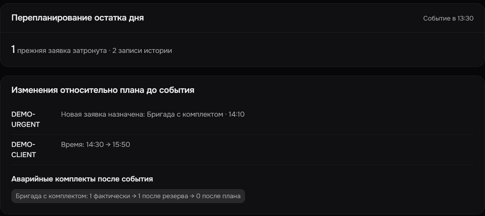
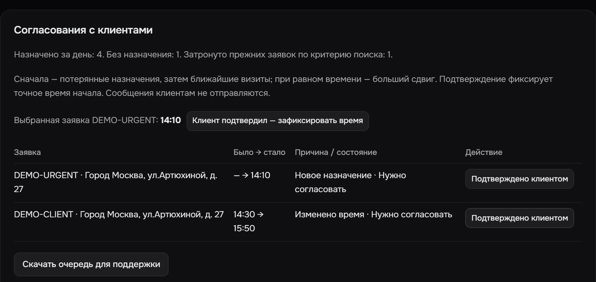

Кто, куда и во сколько едет
Планировщик выездных инженеров. Кейс «Билайн Бизнес»: распределение заявок и маршруты с учётом квалификации, окон, транспорта и оборудования.

Задача
Данные
1
Исходные CSV
Не редактируются. Контрольные распределения трёх территорий
2
Нормализация и геокодирование
Адреса приводятся к одному виду, координаты кэшируются
3
Матрицы OSRM
Три графа: автомобиль, велосипед, пешком. Геометрия маршрутов
4
Prepared-наборы
Версия формата и SHA-256 источников. Проверки — без сети
Навыки, запасы оборудования и длительности работ — модельные допущения команды. Они видны в интерфейсе рядом с источником: уточнение организаторов или решение команды.
Алгоритм
1
Допустимая вставка
Каждая заявка встаёт только туда, где сходятся навык, транспорт, окно, смена и оборудование
2
Локальный поиск
Переносы и обмены между маршрутами с конечным бюджетом — миллион проверок кандидатов
3
Независимый валидатор
Заново пересчитывает расписание, ограничения и метрики перед публикацией плана
Базовый вариант из ТЗ: заявки по порядку поступления, первый подходящий инженер, визит в конец маршрута. Улучшенный план сравнивается с ним той же целью. Глобальный оптимум не обещаем — сохраняем лучший найденный допустимый план.
Результат на исходном дне
205 / 205
заявок назначено
Базовый вариант оставляет 34 без исполнителя, из них 12 аварий
35 → 23
бригады задействованы
Нижняя граница — 18: меньшим составом день не закрыть
−45%
пробег: 2 198 → 1 219 км
При этом улучшенный план обслуживает на 34 заявки больше
Сумма по трём территориям, отчёт pnpm benchmark. Сравнение с базовым алгоритмом ТЗ при модельных параметрах, а не измеренная экономия
относительно работы диспетчеров. Валидатор нарушений не нашёл.
По территориям
Восток на карте
Базовый 56 назначено, 10 без исполнителя 12 бригад · 340,9 км
Улучшенный 66 назначено, все заявки 8 бригад · 274,8 км
Потяните шторку или нажмите на карту


Базовый УлучшенныйОбъяснение назначения
Подключение на Бронницкой, 12 назначено бригаде Арташкин на 13:34–15:04 — в окне 12:00–14:00.
Объяснение — структурированная часть результата планировщика; текст формирует интерфейс. Это сравнение переносов, а не доказательство оптимальности.

Расписание
Работа, переезды и резерв на одной шкале. Выбор визита синхронизирован с картой.

Перепланирование
Выполненное подтверждает диспетчер, начатая работа не прерывается. Авария начинается в окне 14:00–14:20, клиент переносится с 14:30 на 15:50. Затронута одна прежняя заявка. Учебный модельный день, отдельно от исходной выгрузки.
После события


Стресс-проверки
| Исходный день | Переезды +20% | Работы +20% | Оба +20% | Ресурсы −1 | Без одной бригады | |
|---|---|---|---|---|---|---|
| Восток | 66/668 бригад56/6612 бригад | 66/668 бригад56/6612 бригад | 66/669 бригад51/6612 бригад | 66/669 бригад49/6612 бригад | 66/668 бригад56/6612 бригад | 66/668 бригад53/6611 бригад |
| Юго-восток | 83/839 бригад64/8312 бригад | 83/8310 бригад61/8312 бригад | 83/8311 бригад58/8312 бригад | 83/8312 бригад58/8312 бригад | 79/839 бригад64/8312 бригад | 80/8310 бригад59/8311 бригад |
| Югоцентр | 56/566 бригад51/5611 бригад | 56/566 бригад47/5611 бригад | 56/567 бригад46/5611 бригад | 56/567 бригад42/5611 бригад | 56/566 бригад51/5611 бригад | 55/566 бригад46/5610 бригад |
Базовый вариант во всех 18 случаях назначает меньше. Неназначенные заявки объяснены: на
Юго-востоке аварийным бригадам не хватает комплектов, на Югоцентре без исключённой бригады
не остаётся нужной квалификации. Все случаи входят в
pnpm check.
Инструменты диспетчера
Запас прочности
До 12 проверочных аварий: три адреса и четыре времени. Видно назначение, сдвиги и потери прежних заявок.
Сценарные проверки, не вероятность и не гарантия SLA
Утренние комплекты
Подбор переноса аварийного комплекта между бригадами, который улучшает те же проверки и сохраняет исходные назначения.
Применяется отдельным подтверждением выдачи до выезда
Последствия задержки
+15, +30 или +60 минут к визиту: порядок сохраняется, видны сдвиги, выход за окно и нарушение подтверждённого времени.
Свои данные
CSV или JSON с заявками и бригадами. Ошибки — по строкам; при ошибке прежний план сохраняется.
Переезды к новым точкам явно помечены как приближённые
Инженерная часть
252
теста в 33 файлах
Ограничения, валидатор, перепланирование, парсеры, интерфейс
0
сетевых запросов в расчёте
Матрицы готовятся заранее, онлайн нужны только тайлы карты
0,6–4 с
оптимизация территории
Один запуск без прогрева, не SLA. Пакетные проверки — в Web Worker
packages/plannerpnpm checkpnpm benchmarkГраницы прототипа
Класс
search-limit
честно говорит: вариант не найден, но полнота поиска не доказана. Он отделён от доказуемой
несовместимости и полной проверки вставок.
Запуск
pnpm install --frozen-lockfile
Node.js 24 LTS (от 24.4.0), pnpm 11.15.0
pnpm dev
http://127.0.0.1:5173 — Восток откроется и рассчитается сам
pnpm check
все проверки, без сети
pnpm benchmark
отчёт по трём территориям и стрессам
Сайт проекта · Репозиторий · README · документация и отчёт в docs/